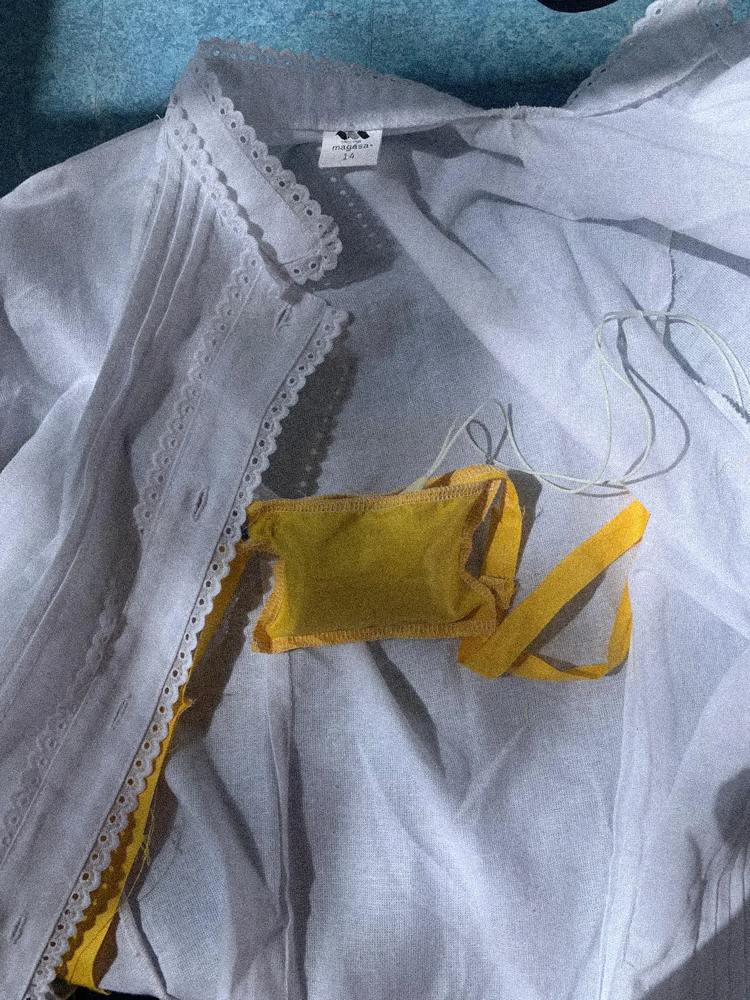
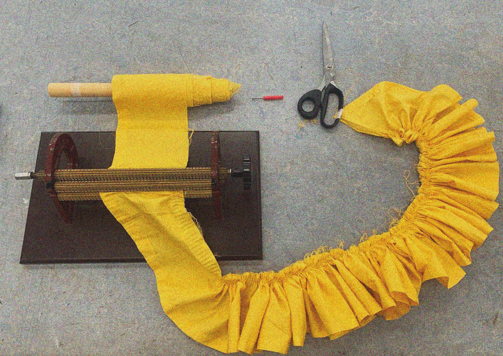
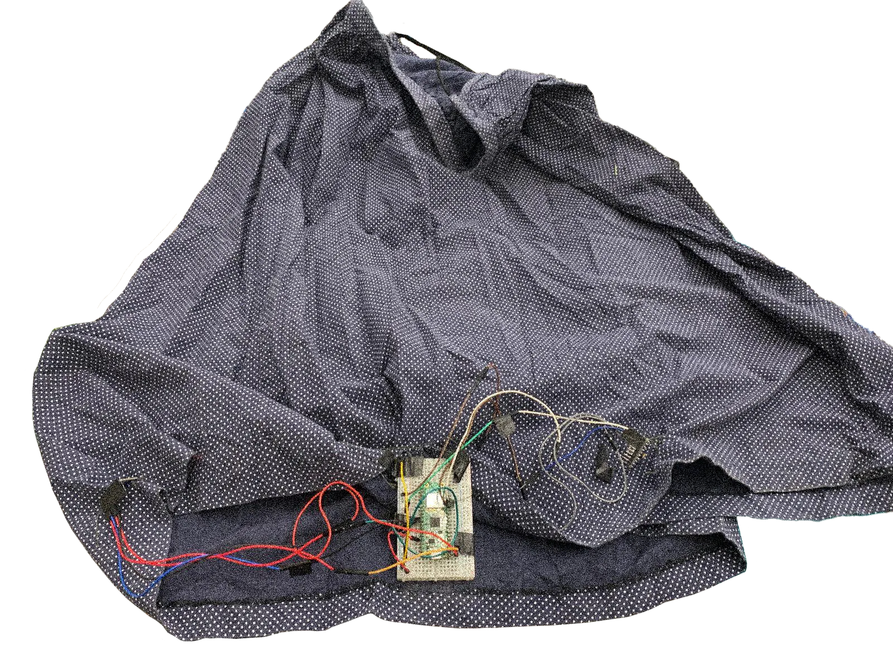
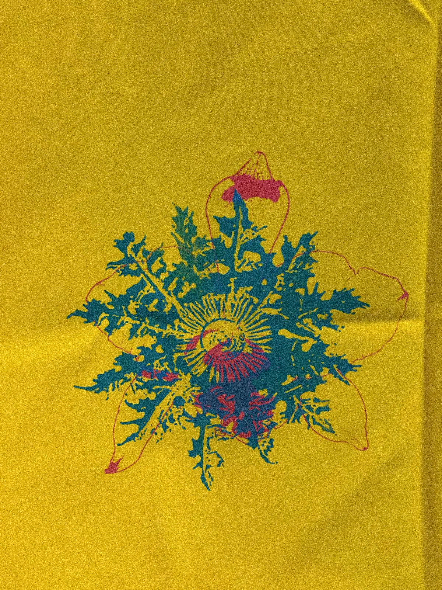
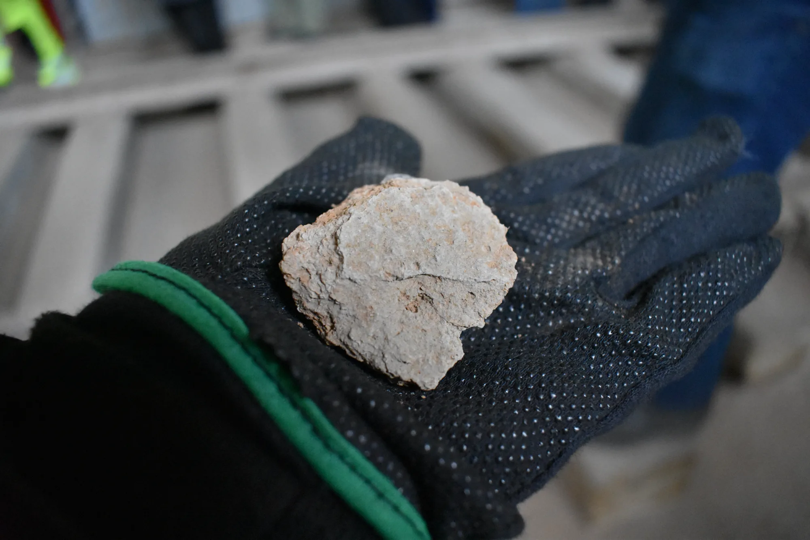

Cinekids
BPMaxxing is a physical multiplayer game made for the Cinekids Festival in Amsterdam, responding to the festival’s theme of togetherness.
Recorded by Pawel Poluwtki
Editing and video soundtrack by Simon Perjessy
Technology and togetherness
This project is a physical multiplayer game made for the Cinekids Festival in Amsterdam, responding to the festival’s theme of togetherness.
Three players each hold a controller that reads their pulse in real time. The goal is to collectively reach 120 BPM together. To get their heart rates up, players have to move, jump, run in place, whatever it takes. The game gives live feedback, showing each person’s pulse and nudging the group to calibrate until their rhythms align. Nobody wins alone. The win condition is synchronization.
BPMaxxing encourages children to connect through movement instead of screens. After a one-minute calibration, players run, jump, and play to adjust their heartbeats. Colors visualize their heart rates from blue (very low) to red (very high). Once both players reach a high target, they unlock a rainbow celebration with music and joyful sounds.
Transitions
Researching the identity between two cultures
“Transitions” is a performative exploration of identity and belonging, weaving Venezuelan manduco and Basque arina-arina dance into a narrative of cultural in-betweenness. Through movement, garment and technology, the work reclaims the body as a site of radical self-expression, navigating the tension of never being “enough” of one culture. A journey from alienation to empowerment, where dance becomes a tool for reappropriation and freedom.
recorded by Ilva Nieuwstraten
When I emigrated, I left behind the body I had there. I left an identity that I will never get back, forgetting that part of me, what was mine and that I could never be again.
“Identities that I don’t own but I was once.”
The goal of this work is to support my interdisciplinary artistic practice within the current massive immigration of Venezuelans. It explores the power of dance as a tool of bodily reappropriation and radical self-expression. The piece focuses on the transitions of immigrating and questioning identity. The consciousness of the body inside the alienation process of a different culture and the constant battle between desire and the limitations of never being enough of one culture.



Who are we inside the in-betweenness of two identities and into what do we become?
The performance is based on the Venezuelan traditional dance “el manduco” and the Basque dance “arin-arina”. The elements of the garment build unity to create a narrative where both cultures are intertwined.
During the performance, “El manduco pa’ la ropa, el manduco pa’ lavar”, I start moving the manduco from up and down on the floor; it’s a gesture of cleaning cloth. This is a dance I learned when I was 8 years old. I remember the vibrant yellow long skirt and holding it in multiple ways with pride and happiness.
Years later I found myself inside the same situation with a different pace. The song no longer has a letter; “a pandora is playing with an accordion”. I am learning this new dance but I cannot go as fast as everyone. I am so confused about how to dance like the others, and why am I wearing this costume? I want to wear it like everyone else with pride, but I feel I left my body behind and I’m playing a character outside of me.
Who am I? Where am I going? Not from here and not from there?
My body plays in the space and time, and I move haptically and slowly. For one moment I can control the story through my garment and my movement. I use technology as an empowering tool where I can control the music and take over my own story. I can dance freely now and live on this new self.

The light from a void
A sensory labyrinth performance exploring intuition, memory and the emotional vulnerability of losing narrative structure.


We like to think of ourselves as very rational, logical beings. The labyrinth strips away the directional armor we carry with us in daily life. All our life experiences get neatly explained away by our rationality. A narrative is constructed to rationalize the memory of an event to make our emotional perception not only valid, but the only logical response to such an event. But what happens when we lose the ability to create a narrative?
When walking through a labyrinth, there is no narrative to create. There is no trick or sense to hold on to. That is not the point of the labyrinth. The only certainty is the body following the path laid before it and the trust in the path to take you to the center. This blinded trust makes the participants vulnerable. Isolated in the labyrinth without outside stimuli, the participants turn inward to a subjective emotional part of themselves, having to trust their intuition in this way. The labyrinth functions as a bridge to the subconscious, to an intuitive part of ourselves we lack access to in daily life.
Coccinellidae
A room becomes a garden of thoughts, ladybugs, aphids, flies, embody protection, anxiety, and overwhelm as the narrator navigates loneliness, panic, and the slow return to healing, while quietly critiquing mental health care system.
Ecosenda//Kotla Jarve
Artistic Residency by the student program Ecosenda at Kotla Jarve, Estonia.

"Kukersite" rock used for burning and making oil shale in Kohtla-Järve
Ecosenda is a program that supports artistic research and collaboration in the context of environmental issues, collectively and individually researching on eco-sensible practices in the arts with workshops and documenting on 360 Camera and contact microhophne.
Ecosenda consists on a international collaboration between the academies of multispecies storytelling department, EKA academy, Taideakatemia, and Kunsthochshulefuermedien.
This was a an artistic residency where I documented with a 360-degree camera and a contact microphone the landscape of Kotla Jarve.
This artwork explores Estonia’s reliance on oil shale, a key natural resource used for energy production but with severe environmental consequences. It challenges viewers to rethink: what sustainable alternatives could we develop for this material to protect our planet?
Cyberfeminism
Exploring the role of women in technology, questioning the words of “mother-board” while blending with an intimate journey through the female body and natural sounds.
100 days of Hydra
Through daily live coding visuals, Anabel Miryana confronts coding through image creation. The project is a digital mirror aiming to explore and play with geometry and color, blending the real world.
Electronic Marimbola/ Research project
I imagine a society where past Venezuelan indigenous tribes had access to advanced technology. Inspired by pre-Columbian Venezuelan ceramics, specifically the “Standing Female Anthropomorphic Rattle Figurine”, and traditional instruments like the marimbola. I blend ancestral heritage with futuristic aesthetics.


Sensing bodies
This video performance explores the intimacy I have with technology, where interacting with it transforms it into a being that also interacts with me, creating a feedback loop that entangles me inside of this shibari of wires.
Posthumanism and Transhumanism
These were my keywords for my essay :
Can transhumanist technologies be considered living beings?
“Experimenting with performance, electronics, and wires, I explore the connection between myself and technology, encountering an intimacy that I build with machines—an intimacy that expands my being, yet also traps me in.”
I'm still researching my connections between myself and technology .


Why do I have feelings for technology?
Mix Media Poster
From the traditional to the digital, experimenting with the cyanotype process, to scanning into mixed media, to TouchDesigner as an editing tool. To finalize, using Krita to draw :).
.webp)

_page-0001.webp)


New mirrors for Venezuela
New mirrors for Venezuela emerges from a process of researching my visual heritage. The project questions how culture and tradition are shaped, appropriated, and manipulated by power. Under authoritarian narratives, history is simplified into heroic myths dominated by male figures, used to legitimize and empower those in control, while women are erased.
Through this work, I present a new mirror — a new reality for my country — where women return to history and take the lead in shaping the future.
María Lionza, a female cultural symbol, was removed from an autonomous public institution and placed under state control, turning her into an object within a political power struggle.